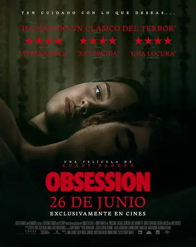
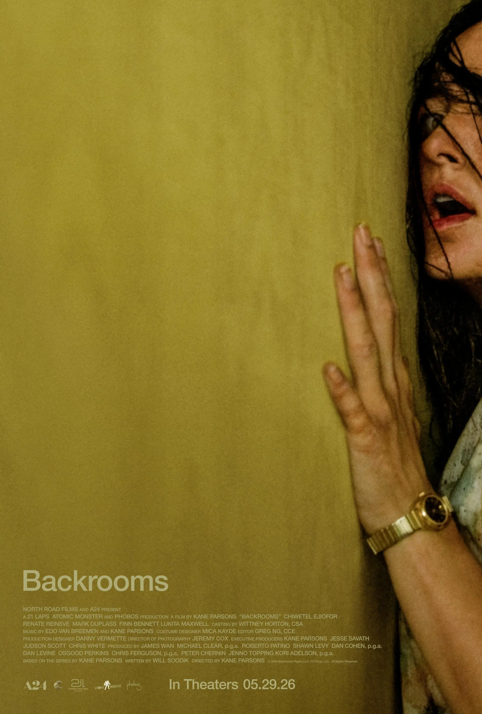

AGUSTÍN
Feliz cumpleaños, Amor mío

Michael Jackson
Hokum: La maldición de la bruja

Obsession

Backrooms

Scary Movie

Toy Story 5

Evil Dead

El final de la calle Oak

Lanoche del demonio: están entre nosotros
Nunca lo olvides
Airbag
Escuchar en SpotifyPase lo que pase, hay momentos, miradas y personas que el corazón decide guardar para siempre.
Vivamos el momento
Airbag
Escuchar en SpotifyPorque si estoy con vos, no necesito pensar tanto en el mañana; simplemente quiero disfrutar cada segundo a tu lado.
Cicatrices
Airbag
Escuchar en SpotifyPorque hasta nuestras heridas forman parte de quienes somos, y yo quiero estar a tu lado para acompañarte en cada una.
Pensamientos
Airbag
Escuchar en SpotifyPorque muchas veces estás en mi cabeza sin siquiera saberlo, apareciendo en mis pensamientos en los momentos más inesperados.
Verte de cerca
Airbag
Escuchar en SpotifyPorque no hay distancia que prefiera cuando puedo tenerte cerca, mirarte y sentir que estoy exactamente donde quiero estar.
Ganas de verte
Airbag
Escuchar en SpotifyPorque por más tiempo que pase, siempre aparece esa misma sensación: las ganas de volver a verte.
Asuntos pendientes
Airbag
Escuchar en SpotifyPorque todavía nos quedan tantos momentos por vivir, tantos lugares por conocer y tantas historias que escribir juntos.
Cuchillos Guantanamera
Airbag
Escuchar en SpotifyPorque hasta en medio del caos, de lo intenso y de todo lo que venga, elegiría seguir compartiéndolo con vos.
Extrañas intenciones
Airbag
Escuchar en SpotifyPorque a veces el amor llega de la manera más inesperada y termina convirtiéndose en algo mucho más lindo de lo que imaginábamos.
Colombiana
Airbag
Escuchar en SpotifyPorque algunas canciones simplemente tienen esa energía que me hace pensar en vos y en todas esas pequeñas cosas que me encantan de nosotros.
Bajos instintos
Airbag
Escuchar en SpotifyPorque hay cosas que no necesitan explicación: simplemente se sienten, y lo que siento por vos es una de ellas.
Blues del infierno
Airbag
Escuchar en SpotifyPorque incluso en los días difíciles, quiero que sepas que no tenés que atravesarlos solo; quiero estar ahí.
Cómo te miro a ti
RV
Porque si pudieras verte aunque sea un segundo con los mismos ojos con los que te miro yo, entenderías por qué te elegí.
Cae el sol
Airbag
Porque cuando cae el sol y termina otro día, hay algo que sigue siendo igual: las ganas de tenerte conmigo.
Feliz cumpleaños, mi amor.
Hoy cumplís un año más, y mientras pensaba qué podía escribirte, me di cuenta de que no existe una cantidad de palabras suficiente para explicar todo lo que siento por vos.
Podría decirte simplemente “te amo”, pero siento que esas dos palabras se quedan demasiado chicas para todo lo que significás para mí.
Así que voy a intentar contarte un poquito de todo eso que a veces siento y no sé cómo decirte.
Y probablemente termine diciendo alguna pavada, porque si hay algo que aprendí desde que estoy con vos es que nunca falta una razón para reírme.
¿Te acordás de nuestra primera cita?
A veces pienso en cómo empezó todo y todavía me causa gracia recordarla.
Mientras vos quizás estabas simplemente conociéndome, yo estaba demasiado ocupada tratando de sobrevivir a los nervios.
Estuve tan callada por vergüenza que todavía no entiendo cómo terminamos siendo novios.
Supongo que algo habrás visto en mí… o quizás simplemente no te importó que pareciera una estatua del miedo.
Pero cuando terminó esa cita, me fui pensando en vos.
En tu voz.
En tu forma de expresarte.
En tus brazos —que, seamos sinceros, fueron un detalle bastante importante desde el principio—.
En tu olor.
En esa forma tuya de hablar que poco a poco fui aprendiendo a reconocer incluso entre mil voces.
Y en lo mucho que te gusta la música.
Sin darme cuenta, empezaste a quedarte en mi cabeza más de lo que debería.
Y después apareció tu forma de quererme.
Hay una cosa que todavía me causa gracia recordar: cuando me dijiste que te encanta mi cara de culo.
No sé qué clase de hombre mira una cara de culo y piensa “qué hermosa”, pero evidentemente vos sos ese hombre.
Y menos mal.
Porque ahí entendí que podía gustarte incluso cuando no estaba intentando ser linda, simpática o perfecta.
Podías querer hasta mis caras de culo.
Y creo que eso fue una de esas pequeñas cosas que hicieron que empezara a sentir que con vos podía ser diferente.
Con vos puedo ser yo.
Y eso es una de las cosas que más valoro de nosotros.
Puedo reírme por cualquier cosa.
Puedo hacer pavadas.
Puedo estar seria.
Puedo estar sensible.
Puedo estar cansada.
Puedo tener un día de mierda.
Puedo ser un cachivache.
Puedo mostrarme exactamente como soy sin sentir que tengo que esconder alguna parte de mí.
Y eso me da una tranquilidad enorme.
Con vos me siento libre.
Me siento feliz y me divierto muchísimo.
Sobre todo, me gusta saber que no tengo que convertirme en otra persona para sentirme querida por vos.
Tus abrazos tienen algo especial.
Hay algo que quizás nunca te digo lo suficiente: me encanta cómo me buscás.
Me encanta que quieras verme y que quieras tenerme cerca.
Me encanta cuando me abrazás simplemente porque sí.
Quizás para vos sean gestos normales, pero para mí significan muchísimo.
Cuando estoy entre tus brazos siento una calma difícil de explicar.
Como si durante un ratito pudiera olvidarme de todo lo demás.
Y quizás por eso noto tanto tu ausencia cuando no estás.
Porque tenerte cerca se convirtió en una de esas cosas que hacen que un día cualquiera se sienta mucho mejor.
Admiro la persona que sos.
Estoy orgullosa de vos
Estoy orgullosa de cómo trabajás.
De cómo seguís adelante incluso cuando estás cansado.
De que no bajes los brazos cuando las cosas se ponen difíciles.
De todo el esfuerzo que hacés, incluso en esos días en los que seguramente lo único que querés es descansar.
Admiro esa fuerza tuya y la manera en la que enfrentás las cosas.
Ojalá vos también puedas ver todo lo bueno que hay en la persona que sos.
Hoy deseo cosas lindas para vos.
En este nuevo año de tu vida deseo que tengas muchísimas razones para sonreír.
Deseo que puedas cumplir tus sueños y alcanzar todo eso que querés.
Que tengas salud, tranquilidad y momentos que realmente disfrutes.
Que algún día puedas mirar hacia atrás y sentirte orgulloso de todo lo que fuiste construyendo.
Y ojalá pueda estar cerca para verlo.
Quiero poder festejar tus logros, disfrutar tus alegrías y acompañarte también cuando las cosas no salgan como esperabas.
Quiero ser un lugar donde puedas descansar.
Quizás no siempre sé cómo ayudarte cuando estás cansado o cuando algo te pesa.
A veces quisiera poder sacarte todo lo malo de encima y hacer que las cosas fueran un poquito más fáciles para vos.
Quisiera poder abrazarte fuerte y que durante un rato pudieras olvidarte de todo lo que te preocupa.
Porque vos hacés muchísimo por mí, muchas veces sin darte cuenta.
Y yo también quiero poder hacer eso por vos.
Quiero que conmigo puedas hablar cuando tengas ganas.
Quiero que podamos reírnos juntos o simplemente quedarnos en silencio.
No tenés que estar bien todo el tiempo conmigo.
Podés estar cansado, triste, de mal humor o simplemente necesitar un poco de compañía.
No tenés que esconder nada de eso.
Yo quiero acompañarte también en esos momentos.
También quiero pedirte perdón.
Por las veces que me enojo por tonterías.
Por las veces que me dejo llevar por la tristeza.
Por no hablar las cosas en el momento y dejar que se acumulen.
Por esas veces en las que quizás no sé expresar bien todo lo que siento.
Sé que todavía tengo cosas que aprender.
Y quiero hacerlo.
No quiero que mis enojos, mis inseguridades o mis malas reacciones terminen ocupando un lugar más grande del que merecen.
Quiero aprender a escucharte mejor, a hablar cuando algo me pasa y a entender también lo que vos sentís.
Quiero que podamos equivocarnos sin dejar de intentar mejorar.
Porque para mí vale muchísimo la pena cuidar lo que tenemos.
No quiero una relación perfecta.
Quiero una relación nuestra.
Con nuestras bromas.
Con nuestras pavadas.
Con mis caras de culo.
Con vos diciéndome cachivache.
Con los besitos.
Con la música.
Con los viajes en el auto.
Con nuestras conversaciones, nuestros momentos tranquilos y también nuestros días difíciles.
No necesito que todo sea perfecto.
Quiero que sea real, nuestro y que podamos seguir construyéndolo entre los dos.
Todavía nos queda muchísimo por vivir.
No sé exactamente qué nos espera.
No sé dónde vamos a estar dentro de algunos años.
No sé qué cosas vamos a atravesar.
Pero hay algo que sí sé: quiero seguir compartiendo mi vida con vos.
Quiero que algún día tengamos tantos recuerdos que podamos mirarnos y decir:
“¿Te acordás de cuando…?”
Quiero conocer lugares nuevos, vivir experiencias distintas, descubrir cosas juntos y también disfrutar esos días simples que no parecen importantes mientras suceden.
Quiero seguir conociendo nuevas partes de vos.
Y quiero que vos sigas conociendo nuevas partes de mí.
Porque siento que todavía tenemos muchísimo por escribir juntos.
Si algún día dudás de lo que siento por vos...
Quiero que recuerdes algo.
Recordá todas esas veces que me viste llorar porque sabía que iba a extrañarte.
Sé que quizás no es la forma más linda de demostrar amor, pero es una de las más sinceras.
Porque cuando te extraño de esa manera es porque tu presencia significa muchísimo para mí.
Y si algún día te preguntás qué hiciste para que te ame tanto, quizás nunca pueda darte una respuesta exacta.
Porque no fue una sola cosa.
Fueron todos esos pequeños detalles que fui conociendo de vos.
Tu voz, tus bromas, tu forma de hablar, tu manera de buscarme, tu esfuerzo, tu forma de trabajar y esa manera tan tuya de ser vos.
También fueron todas esas pequeñas cosas que quizás vos ni siquiera recordás, pero que yo fui guardando.
Gracias por formar parte de mi vida.
Gracias por elegirme.
Gracias por dejarme compartir tantos momentos con vos.
Gracias por ser ese hombre increíble que sos.
Gracias por hacerme reír tanto.
Gracias por hacerme sentir querida.
Gracias por todas esas pequeñas cosas que quizás para vos no significan demasiado, pero que para mí sí.
Y sobre todo...
Gracias por hacer que mi vida sea más linda desde que estás en ella.
Si pudieras verte como te veo yo...
Creo que entenderías muchas cosas que no sé explicar con palabras.
Entenderías por qué me gusta mirarte.
Por qué me gusta escucharte hablar.
Por qué me hace feliz compartir cosas simples con vos.
Y por qué, entre tantas personas, sos vos la persona que quiero tener a mi lado.
No sé qué hice para encontrarte, pero sí sé que quiero cuidar esto que tenemos.
Quiero seguir construyendo lo nuestro.
Quiero que sigamos teniendo esos momentos que algún día se conviertan en recuerdos que nos hagan sonreír.
Quiero que sigamos teniendo nuestras propias historias, esas que solamente nosotros vamos a entender completamente.
Quiero seguir sorprendiéndome con vos.
Quiero seguir aprendiendo cómo quererte mejor.
Quiero seguir compartiendo las cosas que nos hacen bien y también aprender de aquellas que nos cuestan.
Y quiero que, pase el tiempo que pase, podamos seguir encontrando motivos para elegirnos.
Y después de todo esto, si tuviera que quedarme con una sola idea, sería esta:
Me hace feliz compartir mi vida con vos.
Te amo, Agustín.
Te amo en mis días buenos, en mis días de mierda, cuando estoy feliz, cuando estoy sensible, cuando tengo cara de culo y cuando soy un cachivache.
Te amo cuando estamos juntos y también cuando te extraño.
Te amo por todo lo que sos y por todo lo que me hacés sentir.
Y espero que nunca te olvides de que, entre todas las cosas lindas que me pudo regalar la vida, tenerte a vos es una de mis favoritas.
Feliz cumpleaños, mi vida.
Espero que este nuevo año de tu vida venga lleno de momentos lindos, proyectos, sueños cumplidos y muchas razones para sonreír.
Ojalá podamos seguir disfrutando de todo lo que venga.
Y que cuando llegue tu próximo cumpleaños podamos mirar atrás y pensar en todo lo que vivimos durante este año.
Te deseo
un año hermoso,
Mi Chocolatito Precioso.
Te amo muchísimo.
Con todo mi amor,
Lucila
Tuya por siempre